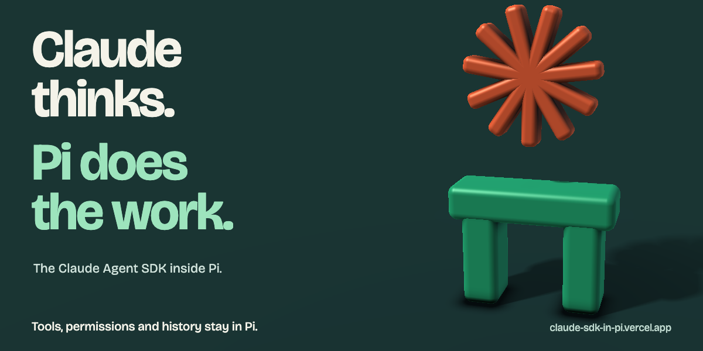
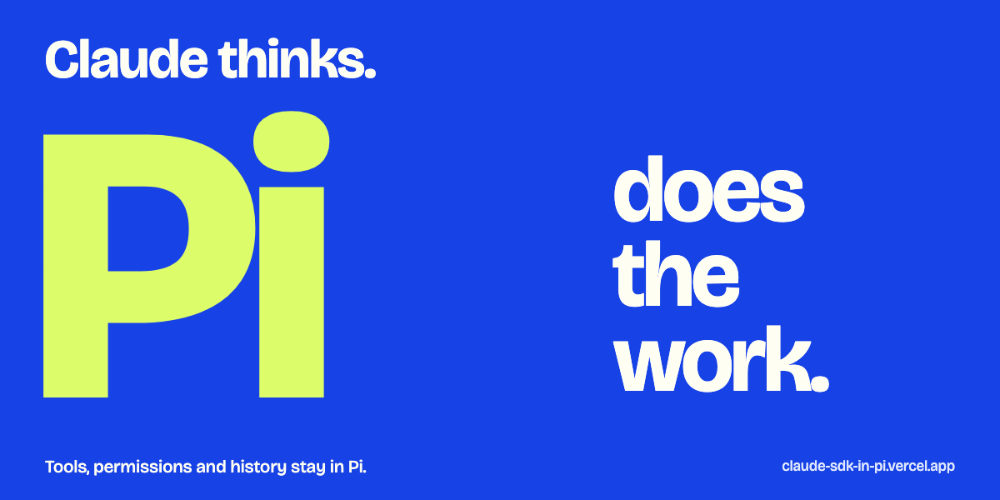
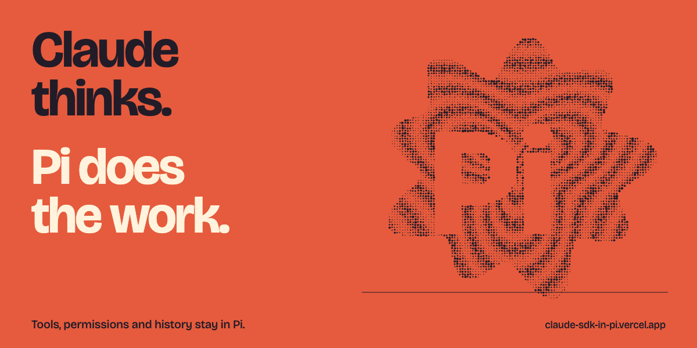

A. Assembly
A sculptural image with real depth, lighting and an exploded composition.

B. Overprint
A type-led poster. Big scale, cobalt and lime, no explanatory diagram.

C. Signal print
A computational screenprint with dense ink, negative space and a warmer palette.